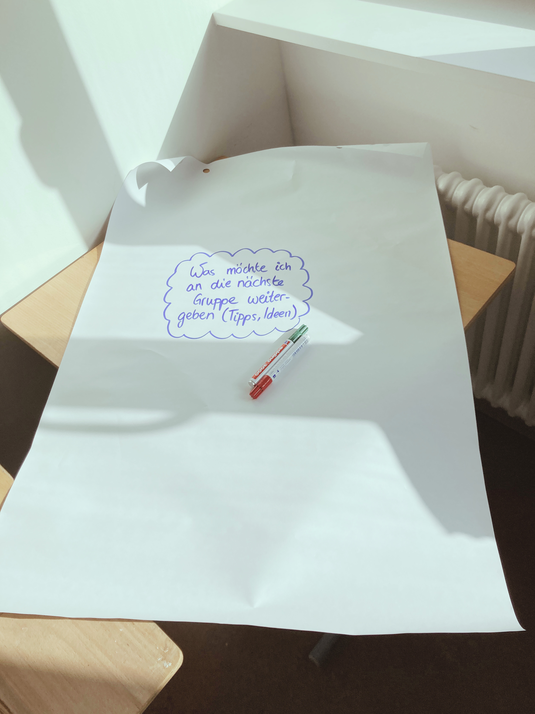
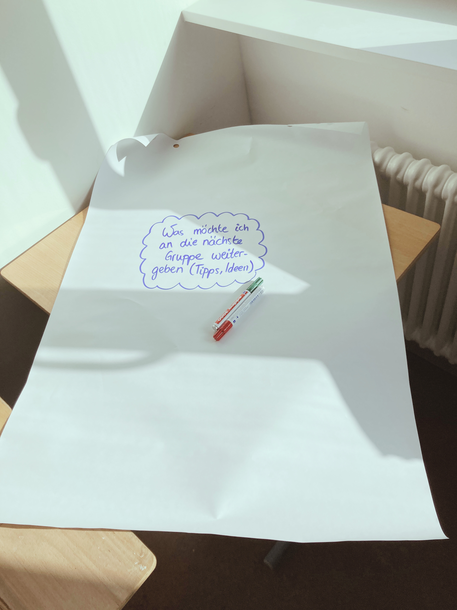

Sprache


Im Rahmen eines Deutsch-Französischen Austauschs zum Thema Großsportveranstaltungen und Stadtentwicklung, organisiert vom dock europe e.V., wurde ein Workshop zu den Themen Olympische Spiele und Nachhaltigkeit angeboten. Der Workshop fand in Hamburg statt und wurde in zwei Sprachen abgehalten: Französisch und Deutsch, mit simultaner Übersetzung. Die Teilnehmerinnen und Teilnehmer hatten die Gelegenheit, nachdem sie an der Entwicklung ihrer idealen Stadt gearbeitet hatten, die bestehenden internationalen Entwicklungsziele kennenzulernen. Sie entdeckten, dass Nachhaltigkeit viele Bereiche umfasst, die alle miteinander verbunden sind. Auf Grundlage dieses Wissens wurden sie eingeladen, über die Vor- und Nachteile der Olympischen Spiele im Zusammenhang mit Nachhaltigkeit und Stadtentwicklung nachzudenken. Im Workshop wurden Methoden wie das SDGs-Netzwerk und das Schreibgespräch verwendet.

 

Im Rahmen des Projekttags eines Gymnasiums in München mit dem Thema "Verschieden sind wir stark" habe ich das Workshop "Vielafalt ist nachhaltig!" zum Thema soziale Nachhaltigkeit angeboten: In diesem Workshop wurden verschiedene Themen behandelt, darunter die allgemeine Bedeutung von Nachhaltigkeit und die Verbindung von Vielfalt und anderen sozialen Themen mit Nachhaltigkeit. Die Schülerinnen und Schüler hatten die Möglichkeit zu diskutieren, wie weit ihre Schule bereits sozial nachhaltig ist und konnten Wünsche für eine stärkere Kultur der Vielfalt an ihrer Schule formulieren. Als Methoden wurden Aktivitäten zu den Sustainable Development Goals (SDGs) und ein Schuldetektivspiel eingesetzt.


Für die Caritas habe ich eine Schulung zur Bildung für Nachhaltige Entwicklung (BNE) für Mitarbeiter*innen einer Kita angeboten: Dabei wurden verschiedene Themen behandelt, darunter die Bedeutung von BNE, der Whole Institution Approach sowie die Umsetzung eines Whole Kita Approach. Es wurden auch die individuelle Umwelt und das Netzwerk der Kita analysiert, um bestehende Ressourcen zu nutzen und zukünftige Veränderungen zu entwickeln. Das Projekt umfasste Teamdiskussionen über Ängste und Hoffnungen bezüglich einer nachhaltigen Entwicklung des Kindergärtens. Es wurden motivierende und kreative Methoden eingesetzt, von denen einige auch als Beispiele für Aktivitäten mit Kindern dienten und durch eine pädagogische Reflexion begleitet wurden.